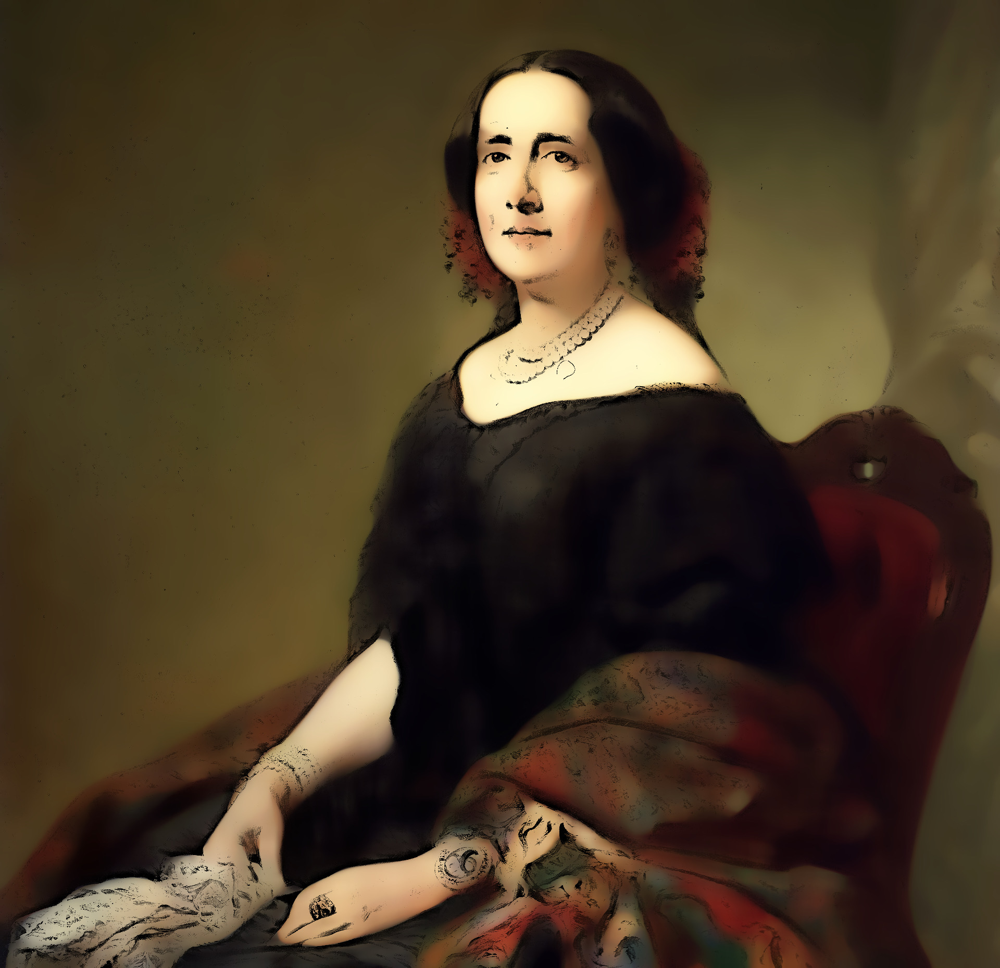

Filoginia - Antología escolar de escritoras hispánicas contemporáneas
Gertrudis Gómez de Avellaneda
Retrato de Gertrudis
Ana Jiménez Camino. Retrato de Gertrudis
JJMS, basado en Felipe Madrazo. Retrato gráfico de Gertrudis Gómez de Avellaneda(CC BY-SA)
Gertrudis Gómez de Avellaneda nació el 23 de marzo de 1814 en Santa María de Puerto Príncipe, hoy Camagüey, Cuba. Era hija del capitán de navío Manuel Gómez de Avellaneda y de Felisa de Arteaga. Pasó su niñez en su ciudad natal, y en su juventud, por razones de salud, se trasladó a Santiago de Cuba, tras negarse a contraer matrimonio. En abril de 1836 partió con su familia hacia España, aunque se instalaron un tiempo en Burdeos, después pasaron a la península, primero La Coruña y después a Sevilla, donde publicó versos en varios periódicos bajo el seudónimo de La Peregrina.
En esta ciudad conoció en 1839 al que sería el gran amor de su vida: Ignacio de Cepeda, un joven estudiante de Leyes con el que vivió una atormentada relación amorosa, y al que dirigirá numerosas epístolas en esta etapa de su vida.
En 1840 hizo amistad con literatos y escritores de la época durante su estancia en Madrid. En 1841 leyó sus poemas en el Liceo y en 1841 publicó su primer libro. También empezaron sus triunfos teatrales con el estreno en 1844 de Munio Alfonso, su primera obra estrenada en Madrid.
Su novela Sab supuso una ruptura ya que era la primera novela abolicionista.
En 1844 conoció al poeta Gabriel García Tassara. Avellaneda se rindió al amor por este hombre que la dejaría sola estando embarazada y soltera, lo que en el Madrid de mediados del siglo XIX era una enorme desgracia. A pesar de todo, en abril de 1845 tuvo a su hija María, que murió a los siete meses. Aunque la escritora intentó que el padre conociera a su hija antes de morir, él se negó.
Su vida sentimental dio un giro cuando en 1846 se casó con don Pedro Sabater, pero la desgracia se cernió de nuevo sobre ella y al poco tiempo su esposo enfermó y apenas un año después de su matrimonio quedó viuda.
En 1850 realizó una segunda edición de sus poesías. Tenía ya el favor del público y de la crítica, siempre tuvo el apoyo de escritores como José Zorrilla, Fernán Caballero, José de Espronceda, o Alberto Lista; sin embargo, Marcelino Menéndez Pelayo impidió que entrara en la Real Academia Española.
En 1858 estrenó su drama Baltasar, cuyo triunfo superó todos los éxitos obtenidos anteriormente, lo cual compensó las contrariedades que había encontrado en su carrera.
Contrajo matrimonio con Diego Verdugo, político, con el que marchó a Cuba en 1859, donde vivió cinco años. En una fiesta en el Liceo de la Habana fue proclamada poetisa nacional. Dirigió la revista Álbum cubano de lo bueno y lo bello, pero en 1863 murió su segundo esposo.
La muerte de sus dos maridos y el abandono de su amante acentuaron su temperamento depresivo y apasionado hacia el espiritismo y periodos de retiro religioso.
Viajó a Norteamérica y regresó a España en 1865. Murió el 1 de febrero de 1873.
Gómez de Avellaneda era admiradora de Mme. de Stael, Chateaubriand, W. Scott, y Quintana. Perteneció al grupo de escritores románticos de la primera generación, escribió poesía, novela y teatro y destacó en los tres géneros, al incorporar a las letras españolas el ambiente caribeño, sentido en Europa como exótico, en un tono melancólico y nostálgico.
La crítica actual la considera una precursora del feminismo moderno tanto por su actitud vital como por la fuerza que imprimió a sus personajes literarios femeninos.
Ana Jiménez Camino. Lectura dramatizada de Dos mujeres(CC BY-SA)
Introducción
Autora
La autora de Dos Mujeres es Gertrudis Gómez de Avellaneda. Fue una escritora y poeta cubano-española del Romanticismo, que cultivó con éxito y gran valor todos los géneros literarios.
Género y tema principal
Es una novela en la que la autora aborda algunos de los principales temas que protagonizan las grandes creaciones novelísticas del siglo XIX: matrimonios concertados, adulterio, educación femenina y papel del bello sexo en la sociedad decimonónica, temas que tantas páginas ocuparán en las grandes novelas del realismo-naturalismo español y europeo.
Antecedentes de la lectura dramatizada
Dos mujeres gira alrededor del típico matrimonio burgués entre dos jóvenes provincianos, Luisa y Carlos, concertado por sus padres desde la niñez. Un viaje de Carlos a Madrid lo pone en contacto con la hermosa y cultivada Catalina, con quien inicia unos amores que descubren, por contraste, la sosa ingenuidad de su legítima esposa. Luisa sigue a Carlos a Madrid y al saber que va a marcharse del país con su amante, decide tener una confrontación directa con esta. Sorpresivamente, la dramática entrevista termina con un acuerdo entre ambas mujeres: la esposa le deja el camino libre a la amante, e incluso cuidará todas las apariencias para evitar el escándalo. Catalina, a última hora, siente escrúpulos de conciencia y se suicida. Luisa se marcha con su esposo al extranjero, pero en el epílogo de la novela nos enteramos del completo fracaso de aquel matrimonio. Y la autora, al final, reflexiona sobre el inexorable vínculo conyugal burgués, que ha hecho igualmente infelices a “la culpable” y a “la virtuosa”, ambas, “acaso también igualmente nobles y generosas”.
Representación
Andrés- Narrador
Laura- Serafina
Ana- Beatriz
Javi- Francisco
Voluntario- Leonor
CAPÍTULO VII
NARRADOR.—Cuando Luisa dejó de ver a Carlos no fue solamente su corazón el que dejó vacío: parecíale que lo estaba igualmente la casa que ya no habitaba, la ciudad que dejaba desierta. Antojábasele que, como si la ausencia de su marido fuese una calamidad pública, Sevilla había tomado un aspecto de luto, y que el trastorno verificado en su felicidad era un trastorno universal. La voz de una vecina que cantaba al piano una alegre canción andaluza, la hirió el oído y el corazón, y se dijo con una especie de dolorosa sorpresa:
BEATRIZ.—¿Hay quien cante cuando él se ausenta?
NARRADOR.—Por la noche vinieron con la acostumbrada puntualidad doña Serafina y doña Beatriz, y Luisa al verlas prorrumpió en amarguísimo llanto.
SERAFINA.—¡Eh! ¿Con que se ha ido Carlos? Ya lo dicen esas lagrimitas. Vamos, niña, no hay que afligirse que eso no vale nada. Un mes o dos de separación para después verse con mayor placer. Vamos, vamos, enjugando con su pañuelo los ojos de Luisa- serenarse, pues ya que nos falta esta noche nuestro lector, justo es que su amada esposa le reemplace: de otro modo pasaríamos la noche bien sosamente. ¿No es verdad, Leonor?
LEONOR.—Le he dicho lo mismo que usted, mi querida Serafina, pero esta niña se está haciendo en demasía mimosa: la culpa la tienen su suegro y su marido, que la han acostumbrado a salirse siempre con su gusto y a no contrariarse en nada. Pues no, antes de casarse no era así Luisita, ni lo hubiera sido nunca si yo únicamente hubiera vivido siempre con ella. Pero los mimos, las adulaciones, las excesivas condescendencias...
NARRADOR.—Luisa aumentó su llanto y don Francisco se apresuró a defenderla llamando a su hermana cruel, injusta y dura.
FRANCISCO.—¿No es natural -dijo, besando la frente y los cabellos a la llorosa niña-, no es natural que sienta mucho la primera separación de su marido?, ¿qué hay en esto de malo? ¿Es posible, Leonor, que de todo saques argumento para mortificar a tu hija y calumniar a tu hermano? Consuélate, hija mía, no llores más: hazlo por mí, no hagas caso de lo que dice tu madre: su propia pena la hace hablar así. No te a ti aflijas, Luisita.
NARRADOR.—Y el anciano caballero conducía a Luisa lejos de la enferma para que ésta no notase el poco fruto de sus consejos.
BEATRIZ.—Vamos, vamos, no se hable más de esto, y, a propósito de ausencias, ¿sabe usted, amiga doña Leonor, como nuestro buen amigo el cura don Eustaquio se nos marcha también a Madrid?
LEONOR.—¿Cómo es posible?
SERAFINA.—Sí, señora, le contaré a usted la historia: porque es una historia el motivo de su marcha.
BEATRIZ Y SERAFINA.—Diga usted, diga usted.
NARRADOR.—Y doña Beatriz comenzó su historia después de sacar su caja de oro con el retrato de lord Wellington, y ofrecer un polvo a sus oyentes
NARRADOR.—Luisa, sentada en un rincón del aposento, procuraba serenarse, y don Francisco después de darle al oído algún consejo con la seguridad de la pronta vuelta de Carlos, se acercó también a la narradora para oír la historia de la partida del padre de don Eustaquio.
NARRADOR.—La conversación se sostuvo más de una hora sobre este asunto; luego se habló del tiempo frío que estaba haciendo, de las enfermedades que producía en Sevilla. Según relato del médico de doña Leonor, de la madre abadesa de las capuchinas que padecía horriblemente todos los inviernos; de una vista que la habían hecho doña Serafina y doña Beatriz; de lo que pensaban hablar en otra visita que proyectaban hacer a la reverenda madre; en fin, la noche se pasó con corta diferencia como las anteriores, y la pobre Luisa vio con sorpresa y dolor que lo que era poderoso a destruir su felicidad era un acontecimiento muy indiferente en sí. Mientras tanto, ella apacentaba su dolor con la contemplación de todos los objetos que le recordaban más vivamente a su marido. La silla que acostumbraba ocupar, los libros que había leído y que aún estaban esparcidos sobre la mesa... Luisa notó que uno de ellos tenía marcada con una cintita la página última que había leído Carlos, y tomó con disimulo la cintita que desde entonces no se apartó nunca de su pecho. Al despedirse las dos señoras no dejaron de repetirla los consuelos de costumbre, y doña Leonor la exhortó después seriamente a moderar un exceso de sensibilidad peligroso sino culpable, habiendo conseguido con su discurso sino calmar el dolor de Luisa, hacerlo parecer extremado e injusto a sus propios ojos. Acostose pensando en ello y diciéndose a sí misma que era, en efecto, una locura afligirse tanto por una corta separación, pero a pesar de sus exactos raciocinios su tierno corazón continuaba opreso de un sentimiento doloroso, y como que una voz interior le gritaba sin cesar que aquella separación destruiría para siempre la felicidad de su vida.
Conclusión
Gertrudis luchó por su condición femenina contra la mentalidad de la época para abrirse camino en los círculos literarios, firmando sus escritos con el seudónimo "La Peregrina". Llegó a ser una de las personalidades más destacadas del Madrid isabelino y figura cuyo talento fue especialmente reconocido en el Liceo Artístico y Literario.
Su pensamiento feminista no nació, vale la pena repetirlo, de la fría especulación y del cálculo personal sino de sus inquietudes emocionales y espirituales, alternando, pues, posturas más pesimistas en la estela de Madame de Staël, y convicciones más optimistas similares a las defendidas por Concepción Arenal, muy amiga suya, según su alma estuviera embargada por el desaliento o por la esperanza y el entusiasmo.
“Lo femenino eterno es lo que ella ha expresado, y es lo característico de su arte, y lo que la hace inmortal, no sólo en la poesía lírica española, sino en la de cualquier otro país y tiempo, es la expresión, ya indómita y soberbia, ya mansa y resignada, ya ardiente e impetuosa, ya mística y profunda de todos los anhelos, tristezas, pasiones, desencantos, tormentas y naufragios del alma femenina.” Esta opinión de Marcelino Menéndez y Pelayo, un académico conservador de mucha influencia y poder en su época, demuestra que la admiración masculina de sus contemporáneos estaba mezclada con la pretensión de reducirla al margen de “lo femenino”, sin reconocer que su valor era universal y contenía a los dos géneros. Al igual que Emilia Pardo Bazán, fue rechazada su candidatura a la Real Academia.